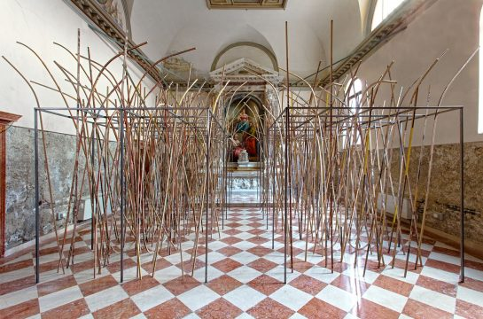

Art in the City
TALKS | ART IN THE CITY – SEAN EDWARDS
Wednesday, 4th November 2020, 18:30 to 20:00 | This is an online presentation on Zoom. | £5.45 (including booking fee)
Art in the City is a series of international artist’s talks co-presented by Fine Art UWE Bristol and Arnolfini. This in-conversation is with Sean Edwards, Programme Director for Fine Art at Cardiff School of Art and Design.